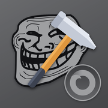

Builds Trollamine on your device: the real Dopamine with the Trollamine theme, plus a TrollStore-style Apps panel. It downloads the latest official Dopamine (about 55 MB) and carries its own installer engine and signer, so TrollStore is not required.